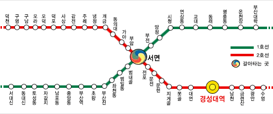
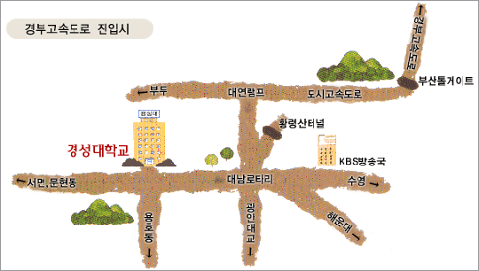
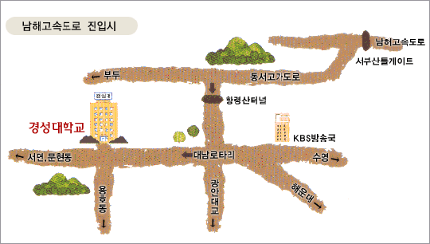

정보과학회 프로그래밍언어연구회 (SIGPL)
2008 여름학교
|
때: 2008년 8월 19(화)-21(목)
곳: 경성대학교(부산) 누리생활관 디지털 이미지홀
|
|---|
한국정보과학회 프로그래밍언어연구회 (SIGPL)는 매년 여름과 겨울 방학기간에 대학원생과 엔지니어, 교수, 연구자들을 대상으로 계절학교를 개최하고 있습니다. 2008년 여름에는 프로그래밍언어의 타입, 함수형 프로그래밍, 계산논리 및 컴파일러 분야의 연구 강의를 준비하였습니다. 또한, 우리나라 대학에서 연구하고 있는 주요 연구활동에 대한 소개도 함께 있을 예정입니다. 많은 관심과 참여를 부탁드립니다.
한국정보과학회 프로그래밍언어연구회 운영위원장 최진영
프로그램
| 8/19(화) | 발표자 | 좌장 |
|---|
|
13:00-14:00 | 등록 | |
14:00-14:30 | 개회식 | |
14:30-15:40 | Monad Programming in Haskell | 변석우 (경성대) | 도경구 (한양대) | |
15:50-17:00 | Computational Logic, Computer Science, and Information
Society | 최진영 (고려대) | 조장우 (동아대) | |
17:00-17:50 | (교양강좌) 유가복상제도에 있어서의 효사상 | 장세호 (경성대)
| 조장우 (동아대) | |
18:10- | 만찬 | | 8/20(수) | 발표자 | 좌장 |
|---|
|
09:30-10:40 | Type and Effect Systems | 창병모 (숙명여대) | 우균 (부산대) | |
10:50-12:20 | 전산논리의 소개 | 박성우 (포항공대) | 신승철
(한국기술교육대) | |
12:20-13:30 | 점심 | |
13:30-14:40 | MPSoc를 위한 통합 컴파일러 플랫폼 | 백윤흥 (서울대) |
변석우 (경성대) | |
14:40-16:30 | 프로그래밍언어 연구 동향 토론 | | 백윤흥 (서울대) | | 8/21(목) | 발표자 | 좌장 |
|---|
|
09:00-10:00 | 학생 발표 세션 I | | 이욱세 (한양대) | |
| MPSoC를 위한 재겨냥성 병렬 프로그래밍 체제 | 김용주 (서울대) | |
| 재겨냥성 컴파일러 | 안민욱 (서울대) | |
| Link-time Instruction Selection for Static Address Loads in
ARM Architecture | 나현익 (KAIST) | |
10:10-11:10 | 학생 발표 세션 II | | 창병모 (숙명여대) | |
| Parallelizing irregular reduction on a cell processor | 김성건 (KAIST) | |
| A Horizontally-Partitioned Data Memory Subsystem and Data
Partitioning Technique for Coarse-Grained Reconfigurable Arrays |
장춘기 (서울대) | |
| Practical and Precise String Analysis | 최태형 (한양대) | |
11:20-12:20 | 학생 발표 세션 III | | 안준선 (항공대) | |
| AST-based Exact-Clone Detection | 이효섭 (한양대) | |
| Subtypes as Subsets and Multiple Type Assignments | 차리서 (고려대) | |
| Abstracting Behavior of Synchronous Reactive Systems | 안윤경 (KAIST) | |
12:20-12:40 | 폐회 및 사진촬영 | |
12:40-13:40 | 점심 | |
등록안내
- 등록비
| | 학생 | 일반회원 | 비회원 |
|---|
| 등록비 | 140,000원 | 220,000원 | 250,000원 |
|---|
- 문의: 변석우 교수 (경성대, 051-607-5144)
참가자 준비사항
준비위원회
- 준비 및 학술위원장: 변석우 교수 (경성대학교)
- 문의: 총무 이재진 교수 (서울대학교)
- 기차-버스: 부산역에서 시내버스 1001, 1003, 40, 27, 139번 (경성대 하차, 약 30분)
- 비행기 (김해공항): 택시 (30분, 15,000원), 리무진 (7000원, 해운대행 -> 남천동 하차 -> 지하철)
- 택시: 부산역 (20분, 6,000원), 노포동터미널 (45분, 16,000원)
- 지하철: 2호선 경성대역에서 하차 (4번, 6번 출구)

- 자가용 (등록데스크에서 학교 주차증 발급):
- 경부고속도로-> 도시고속도로(부두방향) ->대연램프에서 진출. 약 300m 직진하다가 도원 (현대오일) 주유소 옆길 골목으로 들어와서 경성대 후문으로 진입함.

- 남해고속도로 -> 동서고가도로 -> 황령산 터널 지나서, 약 500m 직진 후 도원 (현대오일) 주유소 옆길 골목으로 들어와서 경성대 후문으로 진입함.
